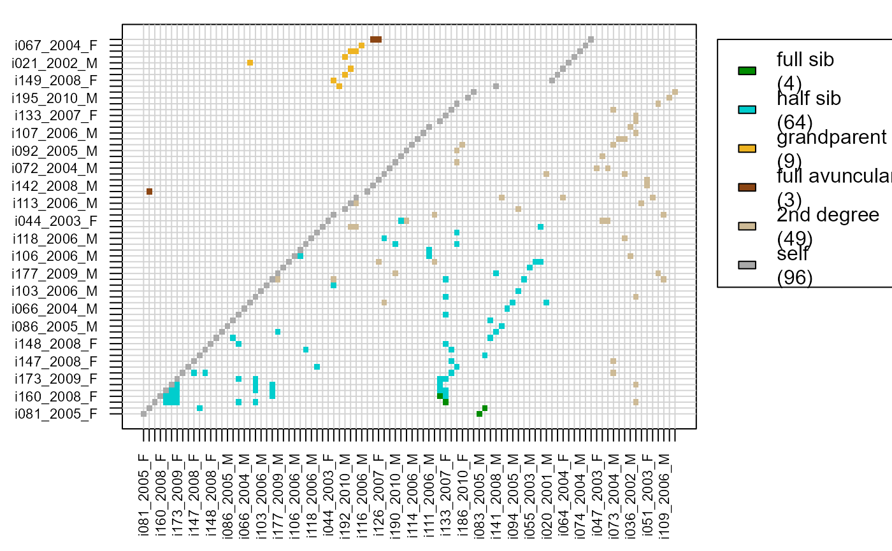

GetMaybeRel.RdIdentify pairs of individuals likely to be related, but not assigned as such in the provided pedigree.
GetMaybeRel( GenoM = NULL, SeqList = NULL, Pedigree = NULL, LifeHistData = NULL, AgePrior = NULL, ParSib = NULL, Module = "par", Complex = "full", Herm = "no", Err = 1e-04, ErrFlavour = "version2.0", MaxMismatch = NA, Tassign = 0.5, Tfilter = -2, MaxPairs = 7 * nrow(GenoM), quiet = FALSE )
| GenoM | numeric matrix with genotype data: One row per individual, and
one column per SNP, coded as 0, 1, 2 or -9 (missing). See also
|
|---|---|
| SeqList | list with output from |
| Pedigree | dataframe with id - dam - sire in columns 1-3. May include
non-genotyped individuals, which will be treated as dummy individuals. When
provided, all likelihoods (and thus all maybe-relatives) are conditional on
this pedigree. Note: |
| LifeHistData | dataframe with 3 columns (optionally 5):
If the species has multiple generations per year, use an integer coding such that the candidate parents' `Birth year' is at least one smaller than their putative offspring's. Column names are ignored, so ensure column order is ID - sex - birth year (- BY.min - BY.max). Individuals do not need to be in the same order as in `GenoM', nor do all genotyped individuals need to be included. |
| AgePrior | Agepriors matrix, as generated by |
| ParSib | either 'par' to check for putative parent-offspring pairs only,
or 'sib' to check for all types of first and second degree relatives. This
argument will be deprecated, please use |
| Module | type of relatives to check for. One of
When 'par', all pairs are returned that are more likely parent-offspring than unrelated, potentially including pairs that are even more likely to be otherwise related. |
| Complex | Breeding system complexity. Either "full" (default), "simp" (simplified, no explicit consideration of inbred relationships), "mono" (monogamous). |
| Herm | Hermaphrodites, either "no", "A" (distinguish between dam and sire role, default if at least 1 individual with sex=4), or "B" (no distinction between dam and sire role). Both of the latter deal with selfing. |
| Err | estimated genotyping error rate, as a single number or 3x3 matrix. Details below. The error rate is presumed constant across SNPs, and missingness is presumed random with respect to actual genotype. |
| ErrFlavour | function that takes |
| MaxMismatch | DEPRECATED AND IGNORED. Now calculated
automatically using |
| Tassign | minimum LLR required for acceptance of proposed relationship, relative to next most likely relationship. Higher values result in more conservative assignments. Must be zero or positive. |
| Tfilter | threshold log10-likelihood ratio (LLR) between a proposed relationship versus unrelated, to select candidate relatives. Typically a negative value, related to the fact that unconditional likelihoods are calculated during the filtering steps. More negative values may decrease non-assignment, but will increase computational time. |
| MaxPairs | the maximum number of putative pairs to return. |
| quiet | logical, suppress messages. |
A list with
A dataframe with non-assigned likely relatives, with columns ID1 - ID2 - TopRel - LLR - OH - BirthYear1 - BirthYear2 - AgeDif - Sex1 - Sex2 - SNPdBoth
A dataframe with non-assigned parent-parent-offspring trios, with columns id - parent1 - parent2 - LLRparent1 - LLRparent2 - LLRpair - OHparent1 - OHparent2 - MEpair - SNPd.id.parent1 - SNPd.id.parent2
Parent-Offspring
Full Siblings
Half Siblings
GrandParent - grand-offspring
Full Avuncular (aunt/uncle)
2nd degree relatives, not enough information to distinguish between HS,GP and FA
Unclear, but probably 1st, 2nd or 3rd degree relatives
When Module="par", the age difference of the putative pair is
temporarily set to NA so that genetic parent-offspring pairs declared to be
born in the same year may be discovered. When Module="ped", only
relationships possible given the age difference, if known from the
LifeHistData, are considered.
sequoia to identify likely pairs of duplicate
genotypes and for pedigree reconstruction; GetRelM to
identify all pairs of relatives in a pedigree; CalcPairLL for
the likelihoods underlying the LLR.
# \donttest{ SeqOUT <- sequoia(GenoM = SimGeno_example, LifeHistData = LH_HSg5, Module = "par", quiet=TRUE, Plot=FALSE) MaybePO <- GetMaybeRel(GenoM = SimGeno_example, SeqList = SeqOUT)#>#>#>#>#>#>#> Counting opposing homozygous loci between all individuals ... #> Checking for non-assigned Parent-Offspring pairs ... #> Checking for Parent-Parent-Offspring trios ...#>#> ID1 ID2 TopRel LLR OH BirthYear1 BirthYear2 AgeDif Sex1 Sex2 SNPdBoth #> 1 a01063 b00013 PO 3.63 1 2001 2000 1 1 2 199 #> 2 a01166 b00002 PO 3.17 1 2001 2000 1 1 2 199 #> 3 a01139 b00009 PO 2.52 1 2001 2000 1 1 2 194 #> 4 a01167 b00002 PO 2.16 1 2001 2000 1 1 2 199 #> 5 b01102 b00014 PO 1.75 1 2001 2000 1 2 2 197 #> 6 a01114 b00010 PO 0.35 2 2001 2000 1 1 2 200# instead of providing the entire SeqList, one may # specify the relevant elements separately Maybe <- GetMaybeRel(GenoM = SimGeno_example, Pedigree = SeqOUT$PedigreePar, LifeHistData = LH_HSg5, Err=0.0001, Complex = "full", Module = "ped")#>#>#>#> Counting opposing homozygous loci between all individuals ... #> Checking for non-assigned relatives ... #> Checking for Parent-Parent-Offspring trios ...#>#> ID1 ID2 TopRel LLR OH BirthYear1 BirthYear2 AgeDif Sex1 Sex2 SNPdBoth #> 1 a01008 a00013 PO 7.31 2 2001 2000 1 1 1 197 #> 2 b01075 a00013 PO 6.76 1 2001 2000 1 2 1 197 #> 3 a01189 a00012 PO 4.30 2 2001 2000 1 1 1 199 #> 4 a01063 b00013 PO 3.63 1 2001 2000 1 1 2 199 #> 5 a01043 a00018 PO 3.44 1 2001 2000 1 1 1 197 #> 6 a01166 b00002 PO 3.17 1 2001 2000 1 1 2 199# visualise results, turn dataframe into matrix first: MaybeM <- GetRelM(Pairs=Maybe$MaybeRel) PlotRelPairs(MaybeM)# }